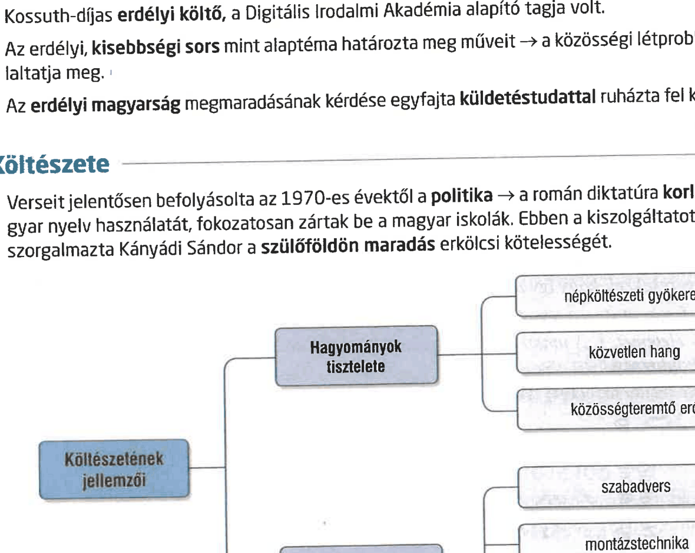

A hagyomány és az újítás Kányádi Sándor költészetében
FELELETVÁZLAT
- Kányádi Sándor 1929-ben született Nagygalambfalván.
- Kossuth-díjas erdélyi költő, a Digitális Irodalmi Akadémia alapító tagja volt.
- Az erdélyi, kisebbségi sors mint alaptéma határozza meg műveit, a közösségi lét problémáit szólaltatja meg.
- Az erdélyi magyarság megmaradásának kérdése egyfajta küldetéstudattal ruházta fel költészetét.
Költészete
- Verseit jelentősen befolyásolta az 1970-es évektől a politika, a román diktatúra korlátozta a magyar nyelv használatát, fokozatosan zártak be a magyar iskolák.
- Ebben a kiszolgáltatott helyzetben szorgalmazta Kányádi Sándor a szülőföldön maradás erkölcsi kötelességét.
- Költészetében egyszerre van jelen a hagyományok tisztelete és az avantgárd, montázsszerű megszólalásmód.
- Fontos jellemzői a népköltészeti gyökerek, a közvetlen hang, a közösségteremtő erő, a szabadvers, az intertextualitás és a központozás tudatos hiánya.

Halottak napja Bécsben
- Műfaja hosszúvers, az avantgárd montázsvers emlékezeti, elbeszélő és lírai elemekkel.
- A vershelyzet szerint a beszélő Bécsben, az Ágoston-rendiek templomában hallgatja Mozart Requiemjét, és a halottak napja, a gyász és a magyarság megmaradásának kérdése kapcsolódik össze.
- A költemény a kisebbségi sors, a szétszóródott magyarság miatti aggodalmat és a kulturális emlékezet működését szólaltatja meg.
- A vers szerkezetét a montázstechnika adja: emlékek, történelmi utalások, népdalok, régi magyar történelem és személyes motívumok keverednek benne.
- Különböző nyelvi rétegek elegyednek a szövegben, tájszavak, szaknyelvi elemek és idegen nyelvi betétek is megjelennek.
- A zárlat egyszerre reménykedő és ironikus.